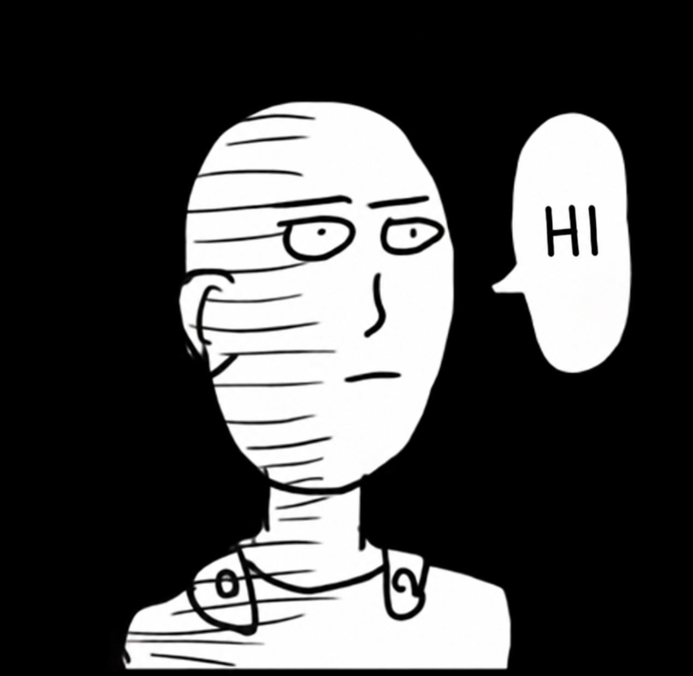

hemadri@home:~$ fastfetch
hello.png PNG

same curiosity.
Hemadri
Shekhar Das
MSc Computer Science / CMI / 2026
I’m Hemadri, a computer science graduate with a background in mathematics. I work on computer networks, build embedded projects, and run a home lab.
Evaluating RTT-aware flowlet routing in ns-3.48
01 / curriculum vitae$ cat about.md
Background & education.
I completed my MSc in Computer Science at Chennai Mathematical Institute in July 2026, after a BSc in Mathematics (Honours) at Asutosh College, University of Calcutta. I study datacenter load balancing and approximate congestion signals.
Outside research, I build embedded projects and run a home lab with self-hosting, Docker, Proxmox, and NAS. My ESP32 Morse transmitter was built to support maritime signal training.
- 2026
- MSc Computer ScienceChennai Mathematical Institute
- BSc
- BSc Mathematics (Honours)Asutosh College · University of Calcutta
02 / directory$ ls ~/
Elsewhere on this site.
03 / contact$ cat links.conf
Contact & links.
Code, experiments, and work in progress.